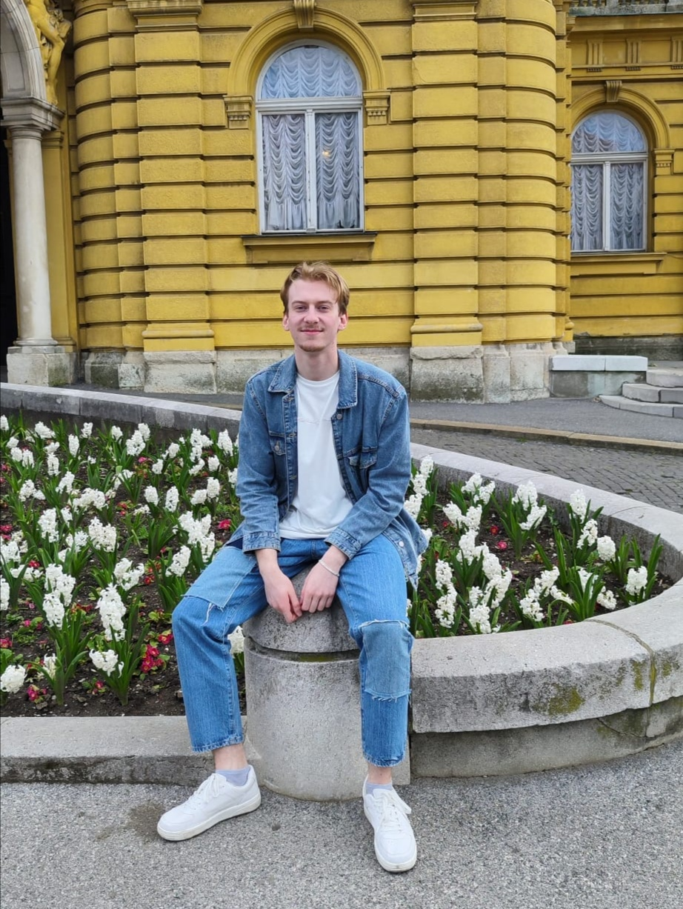
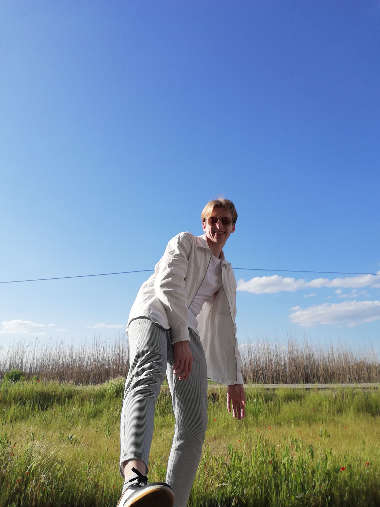
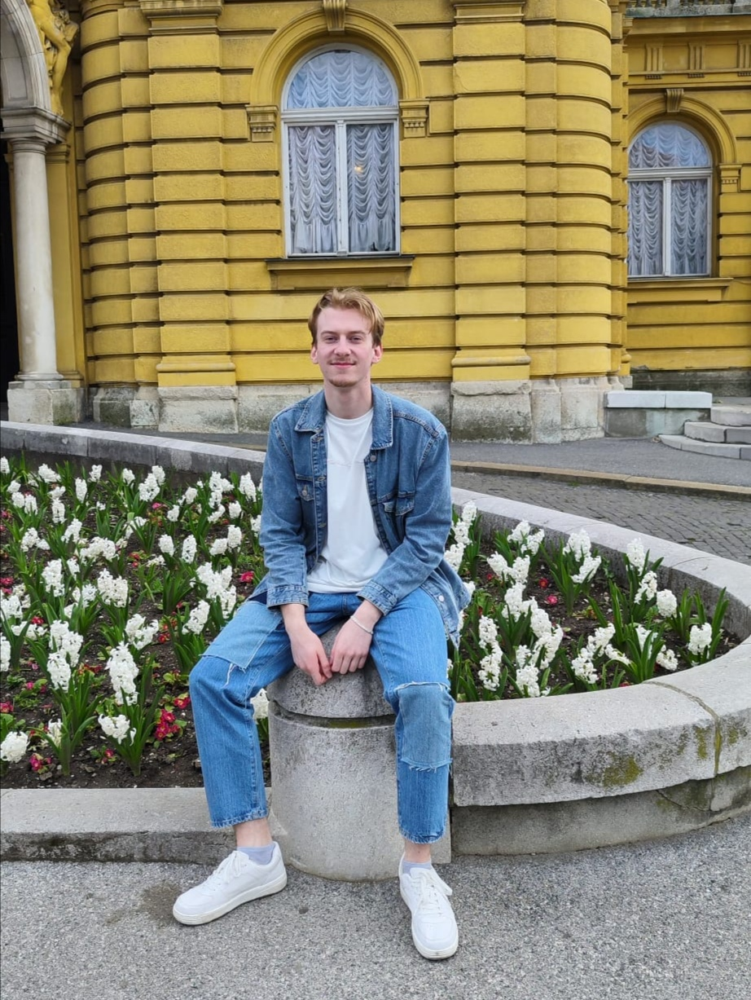
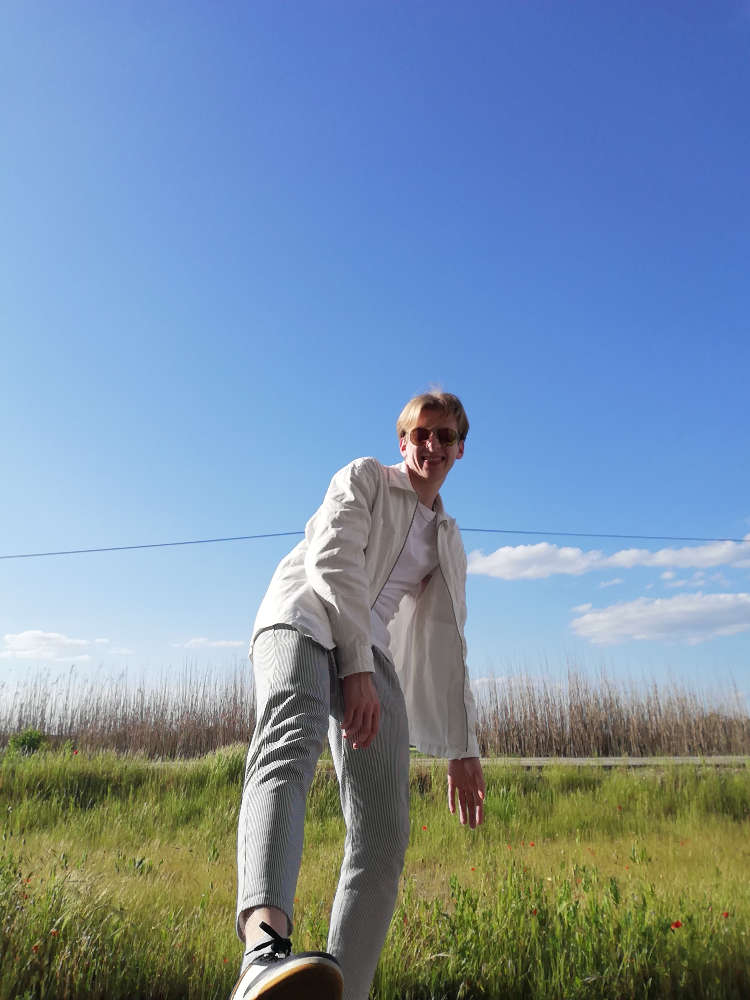

Pozdav svima!
Zovem se Alan te ti želim dobrodošlicu na svoje internetske stranice.
Ovdje možeš saznati nešto više o meni, pogledati moje uratke sa kolegija Digitalni multimedij 1 i pogledati kako ja pripremam svoj omiljeni napitak - kavu!
 


